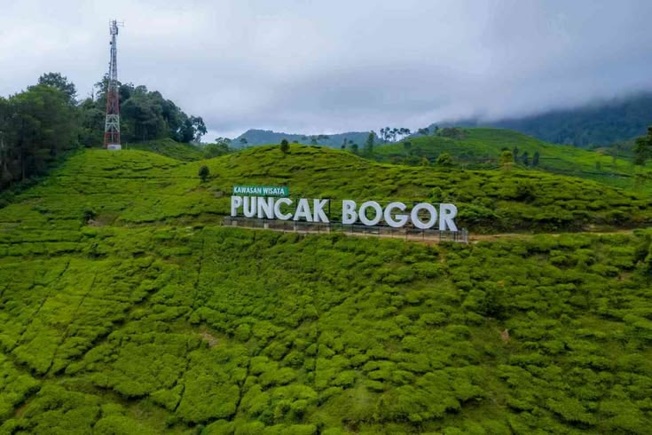
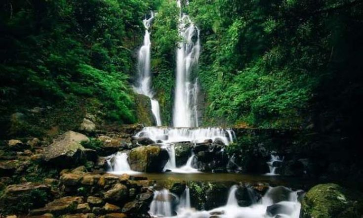
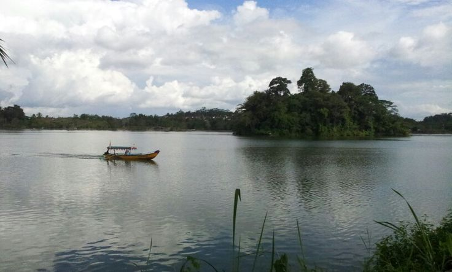

Nikmati Keindahan Alam Indonesia
Temukan ketenangan dan kesejukan alam yang masih asri. Wisata Alam Indah menghadirkan pesona air terjun dan danau alami terbaik untuk liburan keluarga Anda.

Destinasi Unggulan Kami
Curug Cilember

Destinasi wisata alam di kawasan Puncak, Bogor, yang menawarkan kombinasi air terjun bertingkat, hutan pinus, jalur trekking, taman kupu-kupu, wahana rekreasi, dan pilihan menginap di tengah suasana hijau.
Situ Kencana

Destinasi wisata alam yang mengandalkan pesona situ atau telaga sebagai nilai jualnya.